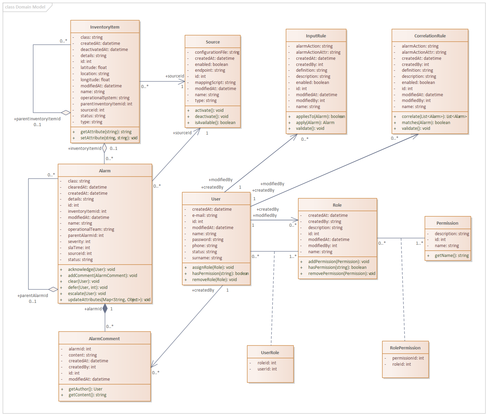

<!DOCTYPE html>
<html lang="en">

<head>
  <meta charset="UTF-8" />
  <title>Umbrella NMS API - Swagger UI</title>
  <meta name="viewport" content="width=device-width, initial-scale=1" />

  <!-- Swagger UI 5 -->
  <link rel="stylesheet" href="./css/swagger-ui.css" />
  <style>
    body {
      margin: 0;
      background: #fafafa;
    }

    .topbar {
      display: none;
    }

    .custom-title {
      color: #3b4151;
      font-family: sans-serif;
      font-size: 24px;
      margin: 0 0 20px 0;
      font-weight: 700;
    }

    .custom-paragraph {
      color: #3b4151;
      font-family: sans-serif;
      font-size: 14px;
      margin: 0 0 20px 0;
    }

    .sidebar {
      width: 300px;
      padding-right: 20px;
      border-right: 1px solid #bdbfc3;
    }

    .image-link {
      display: inline-block;
      margin: 0 0 20px 0;
      font-family: sans-serif;
      font-size: 13px;
      color: #4990e2;
      text-decoration: none;
    }

    .image-link:hover {
      color: #1f69c0;
    }

    .txt-link {
      display: inline-block;
      font-family: sans-serif;
      font-size: 13px;
      color: #4990e2;
      text-decoration: none;
    }

    .txt-link:hover {
      color: #1f69c0;
    }
  </style>
</head>

<body>
  <div style="display: flex; gap: 20px; padding: 20px;">
    <aside class="sidebar">
      <h2 class="custom-title">About the Umbrella NMS Project</h2>
      <p class="custom-paragraph">
        The Umbrella NMS modernization project involved redesigning a legacy monolithic monitoring platform into a scalable, microservices-based solution. The new architecture improved alarm ingestion, enrichment, correlation, and system resilience, while supporting integrations with CORBA, SNMP, HTTP, and REST-based NMS systems. It introduced enhanced observability, dark mode, geospatial maps, reporting, and configurable notifications, significantly improving NOC operations and system maintainability. The domain model below illustrates the core entities of the modernized platform.
      </p>
      
      <a href="./img/umbrella-domain-model.png" target="_blank" class="image-link">
        <small>Open full image in a new tab</small>
      </a>
      <p class="custom-paragraph">
        The Swagger-based API definition presented on the right is a natural continuation of the case study available at <a href="https://github.com/balgalczynski/balgalczynski-portfolio/tree/main/case-study" target="_blank" class="txt-link">the link</a>. It was designed using the domain model shown below, translating the system’s core entities and alarm-processing concepts into a structured, standards-compliant OpenAPI specification. This API layer reflects the architecture of the modernized Umbrella NMS and provides a clear, extensible interface for integrations and future development.
      </p>
    </aside>

    <main style="flex: 1;">
      <div id="swagger-ui"></div>
    </main>
  </div>

  <script src="./js/swagger-ui-bundle.js"></script>
  <script src="./js/swagger-ui-standalone-preset.js"></script>

  <script>
    window.onload = () => {
      SwaggerUIBundle({
        url: "openapi.yaml",
        dom_id: "#swagger-ui",
        deepLinking: true,
        presets: [
          SwaggerUIBundle.presets.apis,
          SwaggerUIStandalonePreset
        ],
        layout: "BaseLayout",
        syntaxHighlight: {
          activated: true,
          theme: "monokai"
        }
      });
    };
  </script>
</body>

</html>